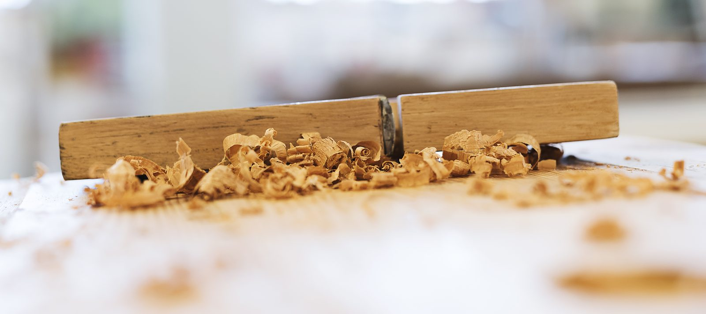

Leistungen
Ihr ganz persönliches Möbel nach Maß
Egal ob Küchen, Badezimmer, Wohnzimmer, Schlafzimmer oder Büros – unser Team deckt alle Bereiche der Möbeltischlerei ab. Wir unterstützen Sie mit fundierter Beratung, detailgetreuer Planung und fachgerechter Umsetzung Ihrer Wünsche.
Küchen mit Funktionen, die man erst beim zweiten Blick sieht
Wir planen und bauen die Küche um Ihren Alltag herum – vom Stauraum über die Arbeitshöhe bis zur Beleuchtung der Arbeitsfläche.
- Ausführung in Holzarten und Oberflächen Ihrer Wahl
- Muster schon in der Planungsphase
- Vollholz oder schlichtes Weiß – beides steht im Schauraum
- Fertigung in der eigenen Werkstatt, Montage durch das eigene Team


Wohnräume von A bis Z
Ganz egal ob Wohnraum, Schlafzimmer oder Büro: In unserer Produktpalette finden sich traditionelle Möbel genauso wie moderne Einbauten. Seit fast 50 Jahren fertigen die Tischler in unserer Werkstatt exakt nach den Wünschen unserer Kundinnen und Kunden.
Wohnen
Wohnzimmer, Anrichten, Regale und Einzelmöbel – geplant für den Raum, in dem sie stehen.
Schlafen
Schlafzimmer und Schrankräume mit Struktur: jeder Zentimeter genutzt.
Büro
Arbeitsplätze und Empfangsmöbel für Betriebe in der Region.
Modulare Badezimmer
Bad-Möbel und Gestaltung als Modulsystem – Teil unserer Produktpalette.
Der Stoff, aus dem die Räume sind
Textilien können viele Zwecke erfüllen: vom dekorativen Element bis zum Schallschutz oder zur effektiven Verdunkelung eines Raumes. Eine gut zusammengestellte Farben- und Formensprache verleiht jedem Raum eine zusätzliche Dimension und sein persönliches Flair.
Bei all unseren textilen Arbeiten beziehen wir die Stoffe vom Traditionshaus Backhausen aus dem Waldviertel. Geschneidert und genäht wird dann im Innviertel.
- Vorhänge und Raffrollos
- Polster und Bezüge
- Deko-Kissen und Accessoires
- Farb- und Materialkonzept passend zu Ihren Möbeln

So arbeiten wir
Ein Ansprechpartner, vier Etappen
Erstgespräch
Unverbindlich und ohne Zeitdruck. Wir hören genau hin, was gebraucht wird.
Planung
Detailgetreue Planung samt Mustern für Holz, Oberfläche und Stoff.
Fertigung
Produktion in der eigenen Werkstatt in Neukirchen an der Enknach.
Montage
Fachgerechte Umsetzung vor Ort – Möbel und Textilien aus einer Hand.
Bekomme ich Muster zu sehen?
Ja. Wir bieten Ausführungen in Holzarten und Oberflächen Ihrer Wahl und sind in der Planungsphase gerne mit Mustern behilflich. Stoffmuster stammen aus den Kollektionen von Backhausen.
Machen Sie auch nur Textilien – ohne Möbel?
Die textile Inneneinrichtung ist ein eigener Bereich unseres Betriebs: vom Vorhang über das Raffrollo bis zum Deko-Kissen. Sie können sie mit Möbeln kombinieren oder einzeln beauftragen.
Wer plant mein Projekt?
Die Planung beginnt mit einem ausführlichen Kundengespräch – bei Barbara Eckereder oder Tischlermeister Andreas Pointner. Im Betrieb arbeiten insgesamt elf Personen, darunter drei Lehrlinge.
Kann ich mir etwas ansehen, bevor ich beauftrage?
Im Schauraum in Neukirchen an der Enknach stehen aktuell zwei neue Küchen – eine in Vollholz, eine im schlichten Weiß – sowie textile Inneneinrichtungen. Kommen Sie gerne vorbei, am besten nach kurzer Terminabsprache.
Wir haben Ihr Interesse geweckt?
Dann freuen wir uns über Ihre Kontaktaufnahme – telefonisch oder über das Anfrageformular.